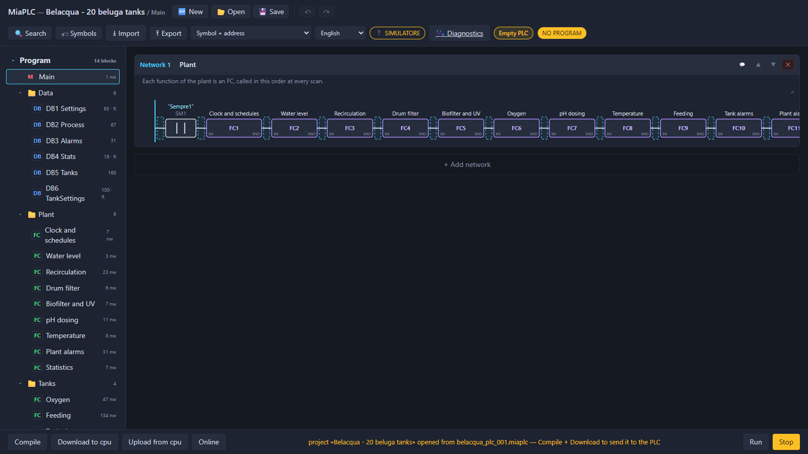

Belacqua
Recirculating aquaculture plant for 100 beluga sturgeons in 20 tanks
System description, electrical design, control software and commissioning
| Document | BEL-MAN-001 |
|---|---|
| Revision | 1.1 · 13 November 2026 |
| Status | Design example, not verified on a physical installation |
| Applies to | belacqua_plc_001, belacqua_io_002, belacqua_io_003, belacqua_hmi_010 |
| Author | Denys Momotenko, MIAplc project |
Revision history
| Revision | Date | Description |
|---|---|---|
| 1.0 | 5 November 2026 | First issue. |
| 1.1 | 13 November 2026 | Editorial revision: document data and revision history, notice, scope, conventions and abbreviations added; sections, figures and tables numbered; no change to the design. |
Contents
1About this document
1.1Purpose and scope
This manual describes Belacqua, a complete design example for the MIAplc platform: a recirculating aquaculture plant for 100 beluga sturgeons in 20 rearing tanks, controlled by one PLC, two µLink I/O modules on the tank lines and a 10.1" touch panel. It shows how a plant of realistic size is structured with MIAplc, from the process data to the electrical design, the I/O lists, the PLC program, the operator panel and commissioning.
Belacqua is not an existing installation. The plant is sized on typical figures for recirculating systems, and the project files supplied with this manual have been checked with the MIAplc tools only (see section 12).
1.2Intended audience
Automation engineers and technicians, teachers and students with a basic knowledge of PLCs and of electrical installations. Knowledge of fish farming is not required: section 2 gives the process data used in the design.
1.3Conventions
Names of program objects, files, addresses and I/O points are written in monospace. Menu items of the
MIAplc tools are written in italics, in the language of the tool.
1.4Abbreviations
| Abbreviation | Meaning |
|---|---|
| AI / AO | Analog input / analog output |
| DB | Data block of the PLC program |
| DI / DO | Digital input / digital output |
| FC | Function of the PLC program |
| HMI | Human-machine interface (operator panel) |
| I/O | Inputs and outputs |
| JB | Junction box on a tank line (JB-A, JB-B) |
| LD | Ladder diagram |
| MCP | Main control panel |
| PLC | Programmable logic controller |
| RAS | Recirculating aquaculture system |
| UPS | Uninterruptible power supply |
| UV | Ultraviolet steriliser |
| VFD | Variable-frequency drive |
| µLink | MIAplc protocol for remote I/O modules on Ethernet |
1.5Project files
The projects are in MiaExamples/example_project/belacqua and in the archive
belacqua-projects.zip published with this manual.
| File | Tool | Content |
|---|---|---|
belacqua.mia | MiaConfig | configuration with the four devices of the plant |
belacqua_plc_001.mia · .miaplc | MiaConfig · PLC editor | hardware of the PLC board · PLC program |
belacqua_io_002.mia, belacqua_io_003.mia | MiaConfig | hardware of the I/O modules of line A and line B |
belacqua_hmi_010.mia · .miahmi | MiaConfig · panel editor | hardware of the panel · pages of the panel |
2Plant description
Beluga sturgeons (Huso huso) are bottom feeders that need cool, clean and well oxygenated water: 16–20 °C (optimum about 18 °C), dissolved oxygen above 7 mg/l, pH 7.0–8.0. Belacqua keeps 100 fish of about 10 kg, 5 per tank, in 20 round tanks of 3 m³ (Ø 2 m, 1 m of water). All the tanks share one recirculating water loop (RAS): the water leaves the tanks, is treated and returns; only a small quantity of new water is added every day.
| Item | Size | Design basis |
|---|---|---|
| Tanks | 20 x 3 m³ = 60 m³ | 1 t of fish at about 17 kg/m³, a comfortable density for sturgeons |
| Circulation | 60 m³/h at night, 90 m³/h by day, 120 m³/h boost | 1 to 2 water exchanges per hour in every tank |
| Pumps | 2 x 7.5 kW with VFD, duty / standby | one pump covers the full flow; the other covers faults and maintenance |
| Drum filter | 120 m³/h, 60 µm screen, automatic backwash | removes faeces and uneaten feed |
| Biofilter | moving bed 12 m³, 2 blowers 2.2 kW with VFD | bacteria convert ammonia into nitrate |
| UV steriliser | 2 x 400 W, 120 m³/h | limits bacteria and algae |
| Heat pump | 12 kW heating and cooling | holds 18 °C in winter and in summer |
| Oxygen | liquid O2 tank, 2 oxygen cones, one valve per tank | pure oxygen where and when a tank needs it |
| Feed | about 10 kg/day (1 % of the weight), 6 meals | portion computed per tank from number of fish and weight |
3Hall layout
3.1Location of the devices
- Main control panel (MCP), technical room: PLC, Ethernet switch, VFDs, contactors, 24 V supply, safety relay, UPS.
- JB-A, JB-B: I/O module of the line, ADS1115 boards, input and output interface boards, terminals for the 10 tanks.
- HMI panel: at the end of the corridor, by the door of the technical room, with a view of all the tanks.
3.2Equipment of each tank
- dissolved oxygen probe and temperature probe (4-20 mA);
- oxygen solenoid valve on the diffuser;
- automatic feeder with a hopper-empty sensor;
- overflow float and low-level float.
4Network
| Device | Address | Project | Name on the network |
|---|---|---|---|
| PLC | 192.168.0.21 | belacqua_plc_001 | belacqua |
| I/O module line A | 192.168.0.22 | belacqua_io_002 | linea (µLink module and DB name) |
| I/O module line B | 192.168.0.23 | belacqua_io_003 | lineb |
| HMI panel | 192.168.0.20 | belacqua_hmi_010 | HMI-P4-xxxx |
5Electrical design
5.1Safety concept
EStop_OK only to stop its logic and to
raise the alarm: no safety function depends on the program.The drawings in this section are simplified and show the principle only. A real installation must be designed, built and verified by qualified personnel according to the regulations and standards that apply at the site, for example EN 60204-1 for the electrical equipment of machines and the IEC 61439 series for the control panel.
5.2Main control panel
5.3Controller interfaces
The ESP32-EVB boards are used with their Ethernet port only: the two relays of the board are not used. The digital I/O pass through shift registers on small interface boards, the analog inputs through 4-20 mA shunts.
| Board | Digital in | Digital out | Analog in | Analog out | Bus |
|---|---|---|---|---|---|
| PLC (MCP) | 32 (4 x 74HC165) | 32 (4 x 74HC595) | 4 (EVB ADC) | 4 PWM → 0-10 V | Ethernet LAN8720 |
| I/O module line A, B (JB) | 32 | 32 | 20 (4 EVB + 4 x ADS1115) | — | Ethernet, I²C SDA 4 / SCL 5 |
6I/O lists
In the PLC program every point is a field of a DB generated from the I/O table: HWDB for the PLC
board, linea and lineb for the modules. The analog values arrive already scaled
(4-20 mA → engineering units) and averaged over 4 readings.
6.1PLC (main control panel)
| Type | Point | Program name | Device | Range |
|---|---|---|---|---|
| DI | sin0.0 | HWDB.EStop_OK | emergency stop chain closed (NC) | |
| DI | sin0.1 | HWDB.Pump1_Running | pump P1 feedback | |
| DI | sin0.2 | HWDB.Pump2_Running | pump P2 feedback | |
| DI | sin0.3 | HWDB.Pump1_Fault | pump P1 VFD fault | |
| DI | sin0.4 | HWDB.Pump2_Fault | pump P2 VFD fault | |
| DI | sin0.5 | HWDB.Drum_HighWater | drum filter high water float | |
| DI | sin0.6 | HWDB.Sump_LowLow | sump low-low float | |
| DI | sin0.7 | HWDB.Blower1_Running | blower B1 feedback | |
| DI | sin0.8 | HWDB.Blower2_Running | blower B2 feedback | |
| DI | sin0.9 | HWDB.UV_Running | UV steriliser lamps on | |
| DI | sin0.10 | HWDB.Chiller_Fault | chiller fault contact | |
| DI | sin0.11 | HWDB.Heater_Fault | heater fault contact | |
| DI | sin0.12 | HWDB.Dosing_Tank_Low | bicarbonate tank low level | |
| DI | sin0.13 | HWDB.Ack_Button | alarm acknowledge push button | |
| DI | sin0.14 | HWDB.Power_OK | mains power monitor | |
| DI | sin0.15 | HWDB.Drum_Running | drum filter motor feedback | |
| DO | sout0.0 | HWDB.Pump1_Run | pump P1 VFD run | |
| DO | sout0.1 | HWDB.Pump2_Run | pump P2 VFD run | |
| DO | sout0.2 | HWDB.Drum_Motor | drum filter motor | |
| DO | sout0.3 | HWDB.Drum_Spray | drum filter backwash spray pump | |
| DO | sout0.4 | HWDB.Blower1_Run | biofilter blower B1 | |
| DO | sout0.5 | HWDB.Blower2_Run | biofilter blower B2 | |
| DO | sout0.6 | HWDB.UV_On | UV steriliser | |
| DO | sout0.7 | HWDB.Makeup_Valve | make-up water valve | |
| DO | sout0.8 | HWDB.Heater_On | heater (heat pump) enable | |
| DO | sout0.9 | HWDB.Chiller_On | chiller enable | |
| DO | sout0.10 | HWDB.Dosing_Pump | pH dosing pump | |
| DO | sout0.11 | HWDB.Horn | alarm horn | |
| DO | sout0.12 | HWDB.Beacon | alarm beacon | |
| AI | vpin.34 | HWDB.Sump_Level | sump level, ultrasonic 4-20 mA | 0…200 cm |
| AI | vpin.35 | HWDB.Water_Temp | loop temperature after the heat exchanger, PT100 4-20 mA | 0…40 C |
| AI | vpin.36 | HWDB.Water_pH | pH probe in the sump, 4-20 mA | 0…14 pH |
| AI | vpin.39 | HWDB.Flow_Rate | circulation flow, magnetic flow meter 4-20 mA | 0…150 m3/h |
| AO | pwm.2 | HWDB.Pump_Speed | speed reference to the pump VFDs (0-100 %) | 0…100 % |
| AO | pwm.4 | HWDB.Blower_Speed | speed reference to the blower VFDs (0-100 %) | 0…100 % |
| AO | pwm.5 | HWDB.Dosing_Speed | stroke rate of the pH dosing pump (0-100 %) | 0…100 % |
6.2Line modules
The two modules are identical. Program names: T01_O2, T01_Temp, T01_FeedEmpty,
T01_Overflow, T01_LowLevel, T01_O2Valve, T01_Feeder …
T20_…; line signals O2_Supply_OK, Aerator_Running, Light,
Aerator.
| Tank | Oxygen (AI) | Temperature (AI) | Feeder empty · overflow · low level (DI) | O2 valve · feeder (DO) |
|---|---|---|---|---|
| tank 1 (A) / 11 (B) | vpin.34 | xadc1.2 | sin0.0 · sin0.1 · sin0.2 | sout0.0 · sout0.1 |
| tank 2 (A) / 12 (B) | vpin.35 | xadc1.3 | sin0.3 · sin0.4 · sin0.5 | sout0.2 · sout0.3 |
| tank 3 (A) / 13 (B) | vpin.36 | xadc2.0 | sin0.6 · sin0.7 · sin0.8 | sout0.4 · sout0.5 |
| tank 4 (A) / 14 (B) | vpin.39 | xadc2.1 | sin0.9 · sin0.10 · sin0.11 | sout0.6 · sout0.7 |
| tank 5 (A) / 15 (B) | xadc0.0 | xadc2.2 | sin0.12 · sin0.13 · sin0.14 | sout0.8 · sout0.9 |
| tank 6 (A) / 16 (B) | xadc0.1 | xadc2.3 | sin0.15 · sin0.16 · sin0.17 | sout0.10 · sout0.11 |
| tank 7 (A) / 17 (B) | xadc0.2 | xadc3.0 | sin0.18 · sin0.19 · sin0.20 | sout0.12 · sout0.13 |
| tank 8 (A) / 18 (B) | xadc0.3 | xadc3.1 | sin0.21 · sin0.22 · sin0.23 | sout0.14 · sout0.15 |
| tank 9 (A) / 19 (B) | xadc1.0 | xadc3.2 | sin0.24 · sin0.25 · sin0.26 | sout0.16 · sout0.17 |
| tank 10 (A) / 20 (B) | xadc1.1 | xadc3.3 | sin0.27 · sin0.28 · sin0.29 | sout0.18 · sout0.19 |
| line | — | — | sin0.30 O2 supply OK · sin0.31 aerator running | sout0.20 lights · sout0.21 emergency aerator |
7PLC program
7.1Structure
Ladder (LD) in 13 functions called by Main: 369 networks, about 30 KB of program, at most 3300 instructions per
scan. Data in 6 DBs: Settings and TankSettings (retentive: they are kept through a power cut),
Process, Tanks, Alarms, Stats (retentive).
| FC | Function | Description |
|---|---|---|
| 1 | Clock and schedules | Local time from the PLC clock, day of the week, day / night, peak tariff, counters of the day. |
| 2 | Water level | Make-up valve with hysteresis; low-low level stops pumps and heating. |
| 3 | Recirculation | Flow target by day, at night (lower) and with a water alert (higher); the pump speed follows the flow in 5 s steps, so the pumps run at the lowest speed that gives it. Duty/standby pumps swap every 24 h and on a fault. |
| 4 | Drum filter | Backwash on high water, every N minutes and every night at a set time, when energy costs less. |
| 5 | Biofilter and UV | Blower 1 always, blower 2 by day or with a water alert, blower speed day / night; UV only with flow. |
| 6 | Oxygen | Per tank: oxygen valve with hysteresis around the set point; low and critical oxygen per line; emergency aerator of the line while a tank is critical. |
| 7 | pH dosing | Bicarbonate in pulses (on / pause) only with flow; timeout alarm if the pH does not rise. |
| 8 | Temperature | Heat pump in heating or cooling with a band; wider band in the peak tariff hours; never both together. |
| 9 | Feeding | Up to 8 meals a day, a fasting day, portion per tank = fish x weight x daily % / meals; a tank with low oxygen or bad temperature skips the meal; tank lights per line on the chosen days. |
| 10 | Tank alarms | An alarm word per tank: O2 low, O2 critical, feeder empty, overflow, low level, temperature. |
| 11 | Plant alarms | 26 latched alarms; acknowledge from the panel or the push button; horn until acknowledged, beacon. |
| 12 | Tank settings | The panel edits one tank at a time (in service, modes, fish, weight) and writes it back. |
| 13 | Statistics | Running hours, backwashes, meals, feed given and estimated pump energy of the day. |
7.2Operating modes and interlocks
Every actuator has a mode: Auto (the program decides), Manual ON, Manual OFF.
7.3Energy saving
The power drawn by a centrifugal pump varies with the cube of its speed: at 70 % speed it is about 34 % of the rated power. Running the pumps at the lowest speed that gives the required flow, and at 60 m³/h instead of 90 m³/h for the 11 hours of night, is estimated to save about 40 % of the daily pumping energy. The blowers slow down at night and the second one stops; heating and cooling use a wider band in the peak tariff hours; the drum filter is washed at 03:00.
7.4Data for other systems
With data exposure the PLC publishes oxygen, temperature and alarms of every tank and the plant values as
JSON (http://192.168.0.21/api/data) and accepts four set points: a farm management software can read
the plant without changes to the program.
8HMI panel
8.1Design principles and page structure
The panel follows the high-performance HMI principles of ISA-101: neutral grey screens; colour only for abnormal conditions (amber for a warning, red for an alarm, blinking for a critical alarm); analog values as a pointer on a scale with the normal band in darker grey; equipment drawn filled when running and hollow when stopped; the same header, alarm line and navigation on every page. The pages are organised in three levels.
| Level | Page | Content |
|---|---|---|
| 1 | Overview | the hall: the 20 tanks in their position, each with oxygen, temperature, O2 and FEED marks, amber or red when the tank has a warning or an alarm; the technical room with flow, temperature, pH, level, pumps and blowers |
| 2 | Water treatment | the recirculation loop drawn as a flow diagram, values, modes of pumps, drum filter, blowers, UV, make-up |
| 2 | Water quality | oxygen of all 20 tanks as bars on the normal band, oxygen, pH and temperature set points and modes |
| 2 | Feeding · Energy · Trends · Alarms · Tank settings · Statistics | meal times, schedules and energy saving, 6-hour trends, alarm list and history, settings of one tank at a time, running hours and totals of the day |
| 3 | Tank 1 … Tank 20 | one page per tank: the tank drawn with feeder, oxygen diffuser and valve, the most severe alarm in words, oxygen and temperature indicators, the 6-hour trend of the tank, previous / next tank |
8.2Screens


The panel exchanges data with the PLC through the HMI data table of the PLC program (240 of 256 rows: 4 per tank plus the plant). It requires the panel firmware 0.1.8 or later (64 recordings, 20 series per chart).
9Alarms
26 plant alarms, latched in the PLC until acknowledged, plus 6 alarms per tank (feeder empty, low water level, temperature out of range, O2 low, overflow, O2 critical) from the alarm word of the tank: 146 alarms on the panel. Red marks an alarm, which requires immediate action; amber marks a warning.
| No. | Plant alarm | PLC field |
|---|---|---|
| 1 | Emergency stop pressed | Al_EStop |
| 2 | Mains power failure | Al_Power |
| 3 | Pump P1 fault | Al_Pump1 |
| 4 | Pump P2 fault | Al_Pump2 |
| 5 | No circulation flow | Al_No_Flow |
| 6 | Sump level low-low: pumps stopped | Al_Level_LowLow |
| 7 | Drum filter screen clogged | Al_Drum_Clogged |
| 8 | Drum filter motor fault | Al_Drum_Motor |
| 9 | Biofilter blower fault | Al_Blowers |
| 10 | UV steriliser fault | Al_UV_Fault |
| 11 | UV lamps to replace | Al_UV_Service |
| 12 | Oxygen supply pressure low, line A | Al_O2_Supply_A |
| 13 | Oxygen supply pressure low, line B | Al_O2_Supply_B |
| 14 | Emergency aerator line A not running | Al_Aerator_A |
| 15 | Emergency aerator line B not running | Al_Aerator_B |
| 16 | pH too low | Al_pH_Low |
| 17 | pH too high | Al_pH_High |
| 18 | pH dosing too long: check the bicarbonate tank | Al_pH_Dose_Timeout |
| 19 | Bicarbonate tank low | Al_Dosing_Tank_Low |
| 20 | Water temperature high | Al_Temp_High |
| 21 | Water temperature low | Al_Temp_Low |
| 22 | Chiller fault | Al_Chiller |
| 23 | Heater fault | Al_Heater |
| 24 | I/O module line A (uLink) not answering | Al_Module_A |
| 25 | I/O module line B (uLink) not answering | Al_Module_B |
| 26 | PLC clock not set: feeding and schedules stopped | Al_Clock |
10Settings
All the settings are in the retentive DB Settings and can be changed on the panel within limits.
| Name | Type | Default | Meaning |
|---|---|---|---|
Level_Makeup_On | REAL | 120.0 | sump level (cm) under which the make-up valve opens |
Level_Makeup_Off | REAL | 130.0 | sump level (cm) at which the make-up valve closes |
Level_LowLow | REAL | 80.0 | sump level (cm) under which pumps and heating stop |
Flow_Day | REAL | 90.0 | circulation flow by day (m3/h): 20 tanks x 3 m3 x 1.5 exchanges per hour |
Flow_Night | REAL | 60.0 | circulation flow at night (m3/h): energy saving, fish at rest |
Flow_Boost | REAL | 120.0 | circulation flow when the water is not good (low oxygen, temperature) |
Flow_Band | REAL | 3.0 | flow band (m3/h): the speed changes only outside it |
Speed_Step | REAL | 1.0 | pump speed change every 5 s (%) |
Speed_Min | REAL | 35.0 | minimum pump speed (%) |
Speed_Max | REAL | 100.0 | maximum pump speed (%) |
Flow_Min | REAL | 30.0 | flow (m3/h) under which there is no circulation |
Pump_Swap_s | UDINT | 86400 | running time (s) after which the duty pump changes |
Blower_Day | REAL | 85.0 | blower speed by day (%) |
Blower_Night | REAL | 60.0 | blower speed at night (%): one blower only |
Drum_Interval | TIME | 1800000 | drum filter backwash every … (ms) when the float does not ask before |
Drum_Wash | TIME | 30000 | duration of one backwash (ms) |
Drum_Max_Hour | INT | 8 | backwashes in one hour above which the screen is clogged |
Drum_Night_Wash | UDINT | 180 | scheduled backwash at … (minute of the day, 180 = 03:00, cheap energy) |
O2_Set | REAL | 8.0 | dissolved oxygen set point (mg/l) |
O2_Band | REAL | 0.5 | oxygen valve band (mg/l): on under Set-Band, off over Set+Band |
O2_Low | REAL | 6.5 | low oxygen in a tank (mg/l): alarm, no feeding in that tank, flow boost |
O2_Critical | REAL | 5.0 | critical oxygen (mg/l): emergency aerator of the line on |
pH_Set | REAL | 7.4 | pH set point |
pH_Band | REAL | 0.1 | pH dosing band: dosing under Set-Band until Set+Band |
pH_Low | REAL | 6.8 | low pH alarm |
pH_High | REAL | 8.2 | high pH alarm |
pH_Dose_On | TIME | 2000 | dosing pulse (ms) |
pH_Dose_Pause | TIME | 20000 | pause between two pulses (ms): mixing time |
pH_Dose_Max | TIME | 900000 | pH still low after dosing for … (ms): alarm |
Dosing_Speed_Set | REAL | 50.0 | stroke rate of the dosing pump (%) |
Temp_Set | REAL | 18.0 | water temperature set point (C), beluga: 16-20 C |
Temp_Band | REAL | 0.5 | temperature band off-peak (C) |
Temp_Band_Peak | REAL | 1.5 | temperature band in the peak tariff hours (C): energy saving |
Temp_High | REAL | 21.0 | high temperature alarm (C) |
Temp_Low | REAL | 14.0 | low temperature alarm (C) |
Peak_Start | UDINT | 480 | peak tariff from … (minute of the day, Monday-Friday) |
Peak_End | UDINT | 1140 | peak tariff until … (minute of the day) |
Day_Start | UDINT | 420 | day from … (minute of the day): lights, day flow |
Day_End | UDINT | 1200 | night from … (minute of the day) |
Light_Days | INT | 127 | lights on these days: bit 0 Monday … bit 6 Sunday (127 = every day) |
Feed_Enable | BOOL | True | automatic feeding enabled |
Fast_Day | INT | 6 | fasting day, no feeding: 0 Monday … 6 Sunday, 7 = none |
Feed_Pct | REAL | 1.0 | daily feed in % of the fish weight |
Feeder_Rate | REAL | 5.0 | feeder output (g/s), the same model on every tank |
Meal_1 | UDINT | 480 | meal 1: minute of the day (480 = 08:00), 9999 = off |
Meal_2 | UDINT | 600 | meal 2: minute of the day (480 = 08:00), 9999 = off |
Meal_3 | UDINT | 720 | meal 3: minute of the day (480 = 08:00), 9999 = off |
Meal_4 | UDINT | 840 | meal 4: minute of the day (480 = 08:00), 9999 = off |
Meal_5 | UDINT | 960 | meal 5: minute of the day (480 = 08:00), 9999 = off |
Meal_6 | UDINT | 1080 | meal 6: minute of the day (480 = 08:00), 9999 = off |
Meal_7 | UDINT | 9999 | meal 7: minute of the day (480 = 08:00), 9999 = off |
Meal_8 | UDINT | 9999 | meal 8: minute of the day (480 = 08:00), 9999 = off |
UV_Service_h | REAL | 9000.0 | UV lamp hours before replacement |
Time_Offset_s | UDINT | 3600 | local time offset from UTC (s): 3600 winter, 7200 summer (Italy) |
11Build and commissioning
11.1Engineering tools



belacqua_hmi_010.miahmi; Pubblica sul pannello makes it the project of the panel.11.2Procedure
- Firmware. Open each
.miain MiaConfig, Genera → Compila firmware, and load it on the board by USB (first time) or over the network. The PLC project uses developer mode (required for the HMI data). - Network. Every board starts with the address of its project; a board that cannot be reached can be found and set by MAC address in MiaConfig (Schede in rete).
- Modules. On the PLC, Diagnostics → I/O modules: pair
lineaandlineb. - PLC program. Open
belacqua_plc_001.miaplcin the PLC editor, connect to 192.168.0.21, check the I/O table against the real board, Compile, Download with the PLC in STOP, then RUN. - Panel. In the panel editor (http://192.168.0.20) Importa
belacqua_hmi_010.miahmiand publish; in the panel settings set the PLC address 192.168.0.21. - Clock. Set the PLC date and time from the panel (Energy page): schedules and feeding depend on it.
- Checks. Each tank in Manual ON / OFF for valve and feeder, probes against a hand-held meter, every alarm once, emergency stop, power cut with the UPS.
12Verification status
The example has been verified with the MIAplc tools. It has not been loaded on devices or tested on a plant.
| Part | Verification with the tools | On real devices |
|---|---|---|
| MiaConfig projects (4) | MiaConfig checks: no errors | not performed |
| PLC program | editor compiler: no errors, no warnings | not performed |
| HMI panel project | panel project checks (firmware 0.1.8): valid | not performed |
| µLink module numbers | the program reads ulink_ok bit 1 (line A) and bit 2 (line B) | to be checked |
| Electrical drawings | example design, to be adapted to the real plant and to the applicable regulations | not applicable |
© 2026 Denys Momotenko · Belacqua is part of MiaExamples (MIT licence) · MIAplc is free software for automation on ESP32 · www.miaplc.it